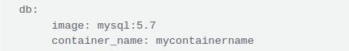

1. Commandes Linux
1.1. useless
1.1.1. Affiche les volumes montés
df -h1.1.2. Un ls avec arborescence récursif
tree /foo/bar1.1.3. Affiche des renseignements sur les systèmes de fichiers des périphériques et blocs disponibles.
lsblk --fs1.1.4. Liste Les UUIDs, les Labels et Types de toutes les partitions montées
blkid1.1.5. Affiche les informations hardwares
lshw <-short -sanitize>1.1.6. Affiche tous les processus actifs
ps -ef1.1.7. liste les processus qui consomment le plus de mémoire
ps -eo pmem,pcpu,pid,args | tail -n +2 | sort -rnk 1 | head1.1.8. liste les processus qui consomment le plus de CPU
ps -eo pmem,pcpu,pid,args | tail -n +2 | sort -rnk 2 | head1.1.9. suspendre une tâche en cours de traitement
CTRL + Z1.1.10. Voir les processus qui utilise un port en particulier
lsof -i :port1.2. find - grep
1.2.1. Rechercher une chaine de caractères
-r = récursif -i = insensible à la casse -n = indique le numéro de la ligne où figure la chaine de caractères
1.2.1.1. exclure des dossiers
–exclude-dir=/foo/bar
1.2.2. pour que le résultat soit enregistré dans un fichier
grep -rin <ma_chaine_de_caractere> * > /foo/bar1.2.3. Chercher une occurrence dans un répertoire en récursif
find . -type f -exec grep "path" '{}' \; -print | more1.2.4. Rechercher un fichier dans l’arborescence
find / -type f -name mon_fichier1.3. netstat - lsof
La commande netstat, pour « Network Statistics » permet d’obtenir de nombreuses informations sur les connexions réseaux et les tables de routage.
1.3.1. Liste les connexions actives tcp / udp avec le processus (program) utilisé
sudo netstat -ltunp1.3.2. Découvrir quel port est utilisé par un programme
sudo netstat -ap | grep le_program1.3.3. Trouver quel processus utilise un port particulier
sudo netstat -an | grep ':le_port'lsof est une commande très utile pour retrouver quel utilisateur ou quel programme utilise quels fichiers.
Or dans linux , (tout est fichier) – périphériques, dossiers, … et même les “sockets” des connexions réseau.
Cet outil permet donc de facilement surveiller les activités d’un programme : qui l’utilise, quels fichiers utilise-t-il, utilise-t-il le réseau etc…
1.3.4. Lister toutes les connexions ouvertes et les ports à l’écoute avec l’user et le processus qui est à l’origine :
sudo lsof -i1.3.5. sur un port particulier
sudo lsof -i :port1.3.6. sur un programme / processus
sudo lsof -i -a -c mon_programme1.3.7. sur un user
sudo lsof -i -a -u mon_user1.4. scp
La commande SCP (Secure Copy) est utilisée pour copier des fichiers de manière sécurisée, basée sur le protocole ssh.
1.4.1. De local vers serveur distant
scp <fichier à envoyer> <utilisateur>@<hôte distant>:<dossier cible>1.4.1.1. en récursif
scp -r <dossier à envoyer> <user@hôte distant>:<dossier cible>1.4.2. d’un serveur distant vers local
scp -r user@<hôte distant>:/var/log/ /home/yishan
scp user@<hôte distant>:/home/user/file.txt /tmp2. Vim
2.1. SheetSheat
2.1.1. Le déplacement (mode commande)
-
Aller en début de ligne → 0
-
Aller en fin de ligne → $
-
Ligne précédente (ou monter) → k
-
Ligne suivante (ou descendre) → j
-
Caractère précédent (ou aller à gauche) → h
-
Caractère suivant (ou aller à droite) → l
-
Mot précédent → b
-
Mot suivant → w
-
Page précédente → Ctrl+B (ou Page précédente avec vim)
-
Page suivante → Ctrl+F(ou Page suivante avec vim)
-
Aller à la ligne n → ngg ou nG (où n est le numéro de ligne)
-
Aller à la première ligne : gg
-
Aller à la dernière ligne → G
2.1.2. Quitter / Enregistrer (mode commande)
-
Enregistrer SANS quitter → :w
-
Quitter en enregistrant les modifications → :wq ou x
-
Quitter sans enregistrer les modifications → :q!
2.1.3. Insertion (mode commande et passer en mode édition)
-
Activer le mode insertion → i
-
Insérer au début de la ligne → I (i majuscule)
-
Activer le mode insertion, un caractère après le curseur → a
-
Insérer en fin de ligne → A
-
Insérer une ligne (en dessous du curseur) → o
-
Insérer une ligne (au dessus du curseur) → O
-
Quitte le mode édition → Echap
2.1.4. Remplacer (mode commande)
-
Remplacer le caractère sous le curseur → r puis le caractère à insérer
-
Remplacer avec le texte saisi → R puis le texte à remplacer
-
Effacer la suite de la ligne et passer en mode insertion → C
-
Quitte le mode remplacement → Echap
2.1.5. Copier / Couper / Coller (mode commande)
-
Copier la ligne courante → yy
-
Copier n lignes à partir de la ligne courante → nyy (Remplacer n par un nombre)
-
Coller (ligne en dessous le curseur) → p
-
Coller (ligne au dessus le curseur) → P
-
Couper la ligne courante → dd
-
Couper n lignes à partir de la ligne courante → ndd (Remplacer n par un nombre)
2.1.6. Effacer (mode commande)
-
Effacer le caractère courant → x
-
Effacer la ligne courante → dd
-
Effacer n lignes à partir de la ligne courante → ndd (Remplacer n par un nombre)
-
Effacer le mot sous le curseur → dw
-
Effacer du curseur à la fin de la ligne → d$
-
Effacer du début de la ligne au curseur → d^
2.1.7. Rechercher (mode commande)
-
Appuyer sur la touche / puis taper la chaîne à rechercher. Appuyer sur la touche Entrée. Appuyer sur la touche n pour aller à l’occurrence suivante, N pour l’occurrence précédente.
-
Recherche en avant du mot texte → /texte
-
Recherche en arrière du mot texte → ?texte
-
Aller à l’occurrence suivante → n
-
Aller à l’occurrence précédente → N
2.1.8. Divers (mode commande)
-
Annuler la dernière action → u
-
Modifier la casse du caractère → ~ (la tilde avec AltGR+2)
3. Commandes Windows
3.1. commandes
3.1.1. Ouvre la base de registre
regedit.exe3.1.2. Ouvre le gestionnaire de disques
diskmgmt.msc3.1.3. Ouvre le gestionnaire de périphériques
devmgmt.msc3.1.4. ouvre l’observateur d’évènements
eventvmr.exe3.1.5. ouvre les paramètres de sons
mmsys.cpl3.1.6. ouvre l’analyseur de performances
perfmon.msc3.1.7. Ouvre l’éditeur des comptes utilisateurs
control userpassword3.1.8. contrôle les utilisateurs et leurs accès
netplwiz3.1.9. tasklist / Kill un processus
taskkill.exe /F /IM <nom_du_processus>3.1.10. Vérifie et répare les fichiers systèmes
nfc /scannow3.1.11. Obtenir la version du système
winver3.1.12. Activer la fonctionnalité Machine virtuelle
dism.exe /online /enable-feature /featurename:VirtualMachinePlatform /all /norestart4. Docker
4.1. commandes
4.1.1. Obtenir les informations de docker sur le système (paths, status, etc)
docker info4.1.2. Lister les images disponibles sur le serveur
docker images4.1.3. Lister les conteneurs qui tournent
docker container ps4.1.4. Télécharger une image de docker hub ou d’un repo distant
docker pull <nom_image>4.1.5. Démarrer une image
docker run <nom_image>4.1.6. Lancer une image en arrière plan (option -d ) avec la possibilité d’intérargir (option -ti)
docker run -d -ti <nom_image>4.1.7. Se rendre dans le conteneur pour effectuer des actions
docker exec -ti <id_conteneur> /bin/bash4.1.8. Arrêter le conteneur docker
docker stop <id_conteneur>4.1.9. Docker fournit une commande unique qui nettoiera toutes les ressources – images, conteneurs, volumes et réseaux – qui sont en suspens (non associées à un conteneur)
docker system prune4.1.10. Pour supprimer en plus tous les conteneurs arrêtés et toutes les images non utilisées (pas seulement les images en suspens), ajoutez l’indicateur -a à la commande
docker system prune -a4.1.11. Visualiser toutes les routes docker sur le système
docker network ls4.1.12. Nettoyer les routes
docker network prune4.1.13. Visualiser les logs d’un container
docker logs -f <nom_container>4.2. docker-compose
4.2.1. Toutes les commandes courantes / utilisées
4.2.1.1. Option pour nommer le container
container_name: <nom>Ex :

4.2.1.2. démarrer / arrêter le docker-compose.yml en mode daemon
Se rendre dans le dossier ou le script est présent :
docker-compose up -d4.2.1.3. Pour l’arrêter
docker-compose stop5. Git
5.1. Commandes basiques
5.1.1. récupérer un repo distant en local
git clone "https://******.git"5.1.2. Identification
git config --global user.email yishan@protonmail.com5.1.3. Modification du fichier / des fichiers
git add "mon_fichier"
git commit -m "commentaire"5.1.4. envoi sur Github / Gitlab
git push5.1.5. suppression d’un fichier
git rm "mon_fichier"
git commit -m "commentaire"5.1.6. Récupérer les dernières modifications distantes / mettre à jour son repo
git pull6. shell
6.1. Installation ZSH & Configuration Terminal TILIX - Ubuntu 22.04
6.1.1. Téléchargement et installation de oh-my-zsh
sh -c "$(curl -fsSL https://raw.github.com/ohmyzsh/ohmyzsh/master/tools/install.sh)"6.1.2. Téléchargement et installation de Powerlevel10K
git clone --depth=1 https://github.com/romkatv/powerlevel10k.git ${ZSH_CUSTOM:-$HOME/.oh-my-zsh/custom}/themes/powerlevel10k6.1.3. Téléchargement et installation des polices Hack Nerd Font
git clone https://github.com/ryanoasis/nerd-fonts
cd nerd-fonts
sudo ./install.sh Meslo6.1.4. Configuration de Tilix
-
Changer la police par MesloLGS Nerd Font Mono Regular
-
Changer le cursor par IBeam
-
Pour les couleurs : Activer l’option use themecolors for foreground/background
6.1.5. Modifier dans le fichier .zshrc la ligne suivante
ZSH_THEME="powerlevel10k/powerlevel10k"6.1.6. Lancer la configuration
`p10k configure`
> choices: y-y-y-y-3-1-2-2-2-1-2-2-4-3-2-2-2-y-1-y6.1.7. Antigen (gestion des plugins)
6.1.7.1. Installation d’Antigen
curl -L git.io/antigen > antigen.zsh6.1.7.2. Ajouter les lignes suivantes au fichier .zshrc
#Load Antigen
source "/home/cmassieu/antigen.zsh"
#Load Antigen configurations
antigen init ~/.antigenrc6.1.7.3. Création du fichier de config ~/.antigenrc
6.1.7.4. lui indiquer que les plugins seront déclarés via OMZ - .zshrc
antigen use oh-my-zsh6.1.8. Ajouter les plugins suivants dans le fichier .zshrc
=== Plugins ===
antigen bundle git
antigen bundle pip
antigen bundle command-not-found
antigen bundle zsh-users/zsh-completions
antigen bundle zsh-users/zsh-autosuggestions
antigen bundle zsh-users/zsh-syntax-highlighting
antigen bundle zsh-users/zsh-history-substring-search
antigen bundle lukechilds/zsh-nvm
antigen bundle ael-code/zsh-colored-man-pageet à la fin du fichier :
=== Antigen Apply ===
antigen apply6.1.9. Alias - Ajouter dans le fichier .zshrc
=== Aliases ===
= Apt-get
alias maj='sudo apt-get update && sudo apt-get upgrade && sudo apt-get dist-upgrade'
alias up='sudo apt-get update'
alias install='sudo apt-get install'
alias autoremove='sudo apt-get autoremove'
alias autoclean='sudo apt-get autoclean'
alias cache='sudo apt-cache search'
alias vi='nvim'
alias exa='exa -abghHliS'
=== SSH === = Deprecated / the conf is now on file config folder ssh
=== BANNER / MOTD ===
alias neo='neofetch --config off --bold off --colors 4 1 8 8 8 7'
= Fuck
eval $(thefuck --alias fuck)6.2. Tmux
6.2.1. Installation
apt-get install tmux
https://github.com/tmux-plugins/tpm6.2.2. Relancer la configuration de tmux
tmux source-file ~/.tmux.conf6.2.3. Divise la fenêtre
tmux split-windowsou
tmux split-windows -h6.2.4. Renommer la fenêtre actuelle
Tmux rename-window
Prefix + ,6.2.5. Lister les sessions en cours
tmux list-session
tmux ls6.2.6. Fermer une session
tmux kill-session -t <N° de la session>6.2.7. Copier / Coller
Touche MAJ + Clic Gauche / Clic Molette6.2.8. Afficher l’heure dans une fenêtre
Prefix + t6.2.9. Supprimer la fenêtre courante
Prefix + &6.2.10. Scinder verticalement
Prefix + %6.2.11. Scinder Horizontalement
Prefix + "6.3. Neovim
6.3.1. Installation
sudo apt install neovim
mkdir .config
touch .config/init.vim6.3.2. Configuration de base init.vim
:set number
:set relativenumber
:set autoindent
:set tabstop=4
:set shiftwidth=4
:set smarttab
:set softtabstop=4
:set mouse=a
:set encoding=utf-8
:set fileencoding=utf-86.3.3. Ajout des plugins via Plug
6.3.3.1. Téléchargement de Plug
sh -c 'curl -fLo "${XDG_DATA_HOME:-$HOME/.local/share}"/nvim/site/autoload/plug.vim --create-dirs \
https://raw.githubusercontent.com/junegunn/vim-plug/master/plug.vim'6.3.3.2. Ajout des plugins dans init.vim
call plug=begin()
Plug 'https://github.com/vim-airline/vim-airline'
Plug 'https://github.com/preservim/nerdtree'
Plug 'http://github.com/tpope/vim-surround'
Plug 'https://github.com/rafi/awesome-vim-colorschemes'
Plug 'https://github.com/neoclide/coc.nvim'
Plug 'https://github.com/ryanoasis/vim-devicons'
Plug 'https://github.com/tc50cal/vim-terminal'
Plug 'https://github.com/preservim/tagbar'
Plug 'https://github.com/terryma/vim-multiple-cursors'
call plug=end()6.3.4. Installer les plugins
:PlugInstall
6.3.5. Dépendances, Configuration
# tagbar
sudo apt install exuberant-ctags# Tagbar
nmap <F8> :TagbarToggle<CR>
:set completeopt=preview# colorscheme
:colorscheme jellybeans# NerdTree
let g:NERDTreeDirArrowExpandable="+"
let g:NERDTreeDirArrowCollapsible="~"
nnoremap <C-f> :NERDTreeFocus<CR>
nnoremap <C-n> :NERDTree<CR>
nnoremap <C-t> :NERDTreeToggle<CR># coc-nvim
curl -sL https://deb.nodesource.com/setup_14.x | sudo -E bash -
sudo apt install nodejs npm
cd /home/cmassieu/.local/share/nvim/plugged/coc.nvim
sudo npm install -g yarn
yarn install
yarn build6.3.5.1. Installation des modules coc selon les langages utilisées
Ex :
:CocInstall coc-python7. Osint
7.1. exiftool
7.1.1. Installation ubuntu 22.04
-
Ouvrez un terminal en appuyant sur Ctrl + Alt + T.
-
Installez les dépendances nécessaires en tapant la commande suivante et en appuyant sur Entrée:
sudo apt install libimage-exiftool-perl-
Téléchargez la dernière version d’Exif Tool en tapant la commande suivante et en appuyant sur Entrée:
wget https://exiftool.org/Image-ExifTool-12.52.tar.gz-
Décompressez l’archive téléchargée en tapant la commande suivante et en appuyant sur Entrée:
tar -xzvf Image-ExifTool-12.52.tar.gz-
Accédez au répertoire en tapant la commande suivante et en appuyant sur Entrée:
cd Image-ExifTool-12.52-
Installez Exif Tool en tapant la commande suivante et en appuyant sur Entrée:
sudo perl Makefile.PL
make
sudo make installExif Tool est maintenant installé sur votre système Ubuntu 22.04. Vous pouvez le lancer en tapant simplement la commande exiftool suivie du nom du fichier image que vous souhaitez afficher les métadonnées. Par exemple, si vous voulez afficher les métadonnées de l’image "image.jpg", tapez la commande suivante et appuyez sur Entrée:
exiftool image.jpgPour supprimer toutes les métadonnées d’une image :
exiftool -all= image.jpg8. Linux
8.1. Gestion des utilisateurs
8.1.1. Lister les groupes d’un utilisateur
=======8. java
8.1. Memory
8.1.1. OutOfMemoryError
il y a 2 type d’erreurs OutOfMemoryError
1.Heap space
cela signifie qu’il faut augmenter la quantité d’espace de la heap (tas) allouée à l’app lors du démarrage du démon.
2.PermGen space
Cela signifie que vous devez augmenter la quantité d’espace de génération allouée pour stocker les métadonnées d’objet Java. Augmenter la valeur du paramètre -Xmx n’aura aucun effet sur cette erreur.
8.1.2. Augmenter la quantité de mémoire allouée à l’app en modifiant les paramètres de la machine virtuelle Java (JVM).
java -Xmx<max-memory> -Xms<initial-memory> -jar app.war<max-memory> est la quantité maximale de mémoire
<initial-memory> est la quantité de mémoire initiale allouée
| Ex : java -Xmx2g -Xms512m -jar jenkins.war |
8.1.3. Connaître les valeurs par défaut
java -XX:+PrintFlagsFinal -version | grep -iE 'HeapSize|PermSize|ThreadStackSize'9. Linux
9.1. Gestion des utilisateurs
9.1.1. Lister les groupes d’un utilisateur
>>>>>>> c031884 (add memory.adoc / java)groups <user>8.1.2. supprimer un groupe d’un utilisateur
=======9.1.2. supprimer un groupe d’un utilisateur
>>>>>>> c031884 (add memory.adoc / java)gpasswd -d <user> <group>8.1.3. supprimer un user avec son home
=======9.1.3. supprimer un user avec son home
>>>>>>> c031884 (add memory.adoc / java)userdel -r <user>8.2. Iptables
8.2.1. Lister les règles et IPs bannies
=======9.2. Iptables
9.2.1. Lister les règles et IPs bannies
>>>>>>> c031884 (add memory.adoc / java)iptables -L8.2.2. Lister un jail fail2ban en particulier
=======9.2.2. Lister un jail fail2ban en particulier
>>>>>>> c031884 (add memory.adoc / java)# Ex: postfix
iptables -L f2b-postfix8.2.3. bloquer une adresse IP avec Iptables
8.2.3.1. IP seule
=======9.2.3. bloquer une adresse IP avec Iptables
9.2.3.1. IP seule
>>>>>>> c031884 (add memory.adoc / java)iptables -I INPUT -s IP_ADRESS -j DROP8.2.3.2. Pour une plage d’adresses
=======9.2.3.2. Pour une plage d’adresses
>>>>>>> c031884 (add memory.adoc / java)iptables -I INPUT -s SUBNET/MASK -j DROP8.2.4. Pour bannir une adresse d’un service en particulier (Apache par exemple)
=======9.2.4. Pour bannir une adresse d’un service en particulier (Apache par exemple)
>>>>>>> c031884 (add memory.adoc / java)iptables -I INPUT -s IP_ADRESS -p tcp --dport 80,443 -j DROP8.3. Fail2ban
8.3.1. Installation sur debian 9
=======9.3. Fail2ban
9.3.1. Installation sur debian 9
>>>>>>> c031884 (add memory.adoc / java)| Version : 0.9.6 |
apt install fail2bansystemctl enable fail2bansystemctl start fail2bancp /etc/fail2ban/fail2ban.conf /etc/fail2ban/fail2ban.local
cp /etc/fail2ban/jail.conf /etc/fail2ban/jail.local8.3.2. Changements effectués
=======9.3.2. Changements effectués
>>>>>>> c031884 (add memory.adoc / java)vim /etc/jail.localbantime = 3600
findtime = 600
maxretry = 3
destemail = security@yishan.io
sender = fail2ban
action = %(action_mwl)s
# Ajout du numéro du port ssh qqui a été modifié
port = ssh,numero_du_port_ssh
# Jails mis en enabled = true
sshd, sshd-ddos, apache-auth, apache-badbots, apache-botsearch, apache-fakegooglebot, apache-modsecurity, apache-nohome, apache-noscript, apache-overflows, apache-shellshock, courier-auth, courier-smtp, dovecot, mysqld-auth, postfix, postfix-rbl, postfix-sasl, recidive, sendmail-auth, sendmail-reject
# Jails Perso
[wordpress]
port = http,https
logpath = /var/log/apache2/wp_access.log
enabled = true8.3.3. Ajout des filtres dans /etc/fail2ban/filter.d/
=======9.3.3. Ajout des filtres dans /etc/fail2ban/filter.d/
>>>>>>> c031884 (add memory.adoc / java)vim /etc/fail2ban/filter.d/wordpress.conf# Fail2Ban filter for WordPress
[Definition]
failregex = <HOST> - - \[(\d{2})/\w{3}/\d{4}:\1:\1:\1 -\d{4}\] "POST /wp-login.php HTTP/1.1" 200
ignoreregex =8.3.4. Vérification du statut des jails
=======9.3.4. Vérification du statut des jails
>>>>>>> c031884 (add memory.adoc / java)fail2ban-client status
fail2ban-client status <jail>8.4. Cron APT
8.4.1. Mise à jour automatique du système, des paquets
8.4.1.1. Installation
=======9.4. Cron APT
9.4.1. Mise à jour automatique du système, des paquets
9.4.1.1. Installation
>>>>>>> c031884 (add memory.adoc / java)apt install cron-apt8.4.1.2. logs
=======9.4.1.2. logs
>>>>>>> c031884 (add memory.adoc / java)/var/log/cron-apt/log8.4.1.3. Conf
=======9.4.1.3. Conf
>>>>>>> c031884 (add memory.adoc / java)echo "upgrade -y -o APT::Get::Show-Upgraded=true" > /etc/cron-apt/action.d/4-YesUpgrade8.4.1.4. Planification
=======9.4.1.4. Planification
>>>>>>> c031884 (add memory.adoc / java)/etc/cron.d/cron-apt# Every night at 4 o'clock.
0 4 * * * root test -x /usr/sbin/cron-apt && /usr/sbin/cron-apt8.5. Gestion des disques
8.5.1. Lister l’espace disque sur les différentes partitions – utilisé et restant
=======9.5. Gestion des disques
9.5.1. Lister l’espace disque sur les différentes partitions – utilisé et restant
>>>>>>> c031884 (add memory.adoc / java)df -h8.5.2. Dans le répertoire courant, lister en ordre décroissant la taille des fichiers et sous répertoires
=======9.5.2. Dans le répertoire courant, lister en ordre décroissant la taille des fichiers et sous répertoires
>>>>>>> c031884 (add memory.adoc / java)du -ah --max-depth=1 | sort -nr8.5.3. Dans le répertoire courant, lister les 20 premiers plus gros fichiers
=======9.5.3. Dans le répertoire courant, lister les 20 premiers plus gros fichiers
>>>>>>> c031884 (add memory.adoc / java)du -xmhs ./* | sort -hr | head 208.5.4. Afficher la taille d’un répertoire, ex : home
=======9.5.4. Afficher la taille d’un répertoire, ex : home
>>>>>>> c031884 (add memory.adoc / java)du home/ -hs8.5.5. Commande courante
=======9.5.5. Commande courante
>>>>>>> c031884 (add memory.adoc / java)du -sch *9. Vagrant
9.1. Vagrant
9.1.1. Installation sur Ubuntu 22.10
=======10. Vagrant
10.1. Vagrant
10.1.1. Installation sur Ubuntu 22.10
>>>>>>> c031884 (add memory.adoc / java)sudo apt install virtualbox vagrant9.1.2. Fichier de configuration pour une Debian 11 KDE
=======10.1.2. Fichier de configuration pour une Debian 11 KDE
>>>>>>> c031884 (add memory.adoc / java)# Définition de la box (image du système d'exploitation) à utiliser
Vagrant.configure("2") do |config|
config.vm.box = "debian/bullseye64"
# Configuration de la machine virtuelle
config.vm.provider "virtualbox" do |vb|
# Configuration de la mémoire et du processeur
vb.memory = 4096
vb.cpus = 2
# Configuration de la carte réseau
vb.customize ["modifyvm", :id, "--natdnshostresolver1", "on"]
vb.customize ["modifyvm", :id, "--natdnsproxy1", "on"]
# Ajout de mémoire vidéo
vb.customize ["modifyvm", :id, "--vram", "256"]
# Ajout de la prise en charge du son
vb.customize ["modifyvm", :id, "--audio", "pulse"]
# Ajout d'un contrôleur IDE
#vb.customize ["storagectl", :id, "--name", "IDE Controller", "--add", "ide"]
# Ajout d'un lecteur CD/DVD
#vb.customize ["storageattach", :id, "--storagectl", "IDE Controller", "--port", 1, "--device", 0, "--type", "dvddrive", "--medium", "emptydrive"]
end
# Configuration du système d'exploitation
config.vm.provision "shell", inline: <<-SHELL
# Mise à jour de la liste des paquets
apt-get update
# Installation de KDE et des outils de développement
apt-get install -y kde-plasma-desktop build-essential
# Configuration du bureau KDE comme environnement par défaut
update-alternatives --set x-session-manager /usr/bin/startplasma-x11
# Installation de Flatpak
apt-get install -y flatpak
flatpak remote-add --if-not-exists flathub https://flathub.org/repo/flathub.flatpakrepo
# Installation de Lutris
flatpak install -y flathub net.lutris.LutrisNommer le script : vagrantfile
| Mes autres scripts sont ici |
9.1.3. Commandes principales
=======10.1.3. Commandes principales
>>>>>>> c031884 (add memory.adoc / java)Pour le démarrer :
vagrant upAcceder à la machine :
vagrant sshArrêter :
vagrant haltDétruire :
vagrant destroyRéexécuter le script de provisionning apres modif :
vagrant provisionAfficher l’état :
vagrant status10. Vmware
10.1. Conversion Image VMDK
10.1.1. Se connecter sur un des esxi en ssh
10.1.2. commandes
=======11. Vmware
11.1. Conversion Image VMDK
11.1.1. Se connecter sur un des esxi en ssh
11.1.2. commandes
>>>>>>> c031884 (add memory.adoc / java)cd /vmfs/volumes/volume01/yourmachine
vmkfstools -i Windows2008-tmp.vmdk -d thin Windows2008.vmdk11. Divers
11.1. Clavier Qwerty - Azerty
=======12. Divers
12.1. Clavier Qwerty - Azerty
>>>>>>> c031884 (add memory.adoc / java)Ex: